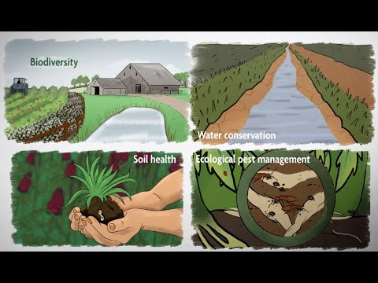

SUSTAINABLE AGRICULTURE
KHETBAZAARI SUPPORTS
SUSTAINABLE FARMING
Sustainable agriculture offers a much-needed alternative to conventional input-intensive agriculture, the long-term impacts of which include degrading topsoil, declining groundwater levels, and reduced biodiversity. It is vital to ensure India’s nutrition security in a climate-constrained world.
Sustainable agriculture is far from mainstream in India, with only 5 (crop rotation; agroforestry; rainwater harvesting; mulching, and precision) SAPSs scaling beyond 5 percent of the net sown area.
